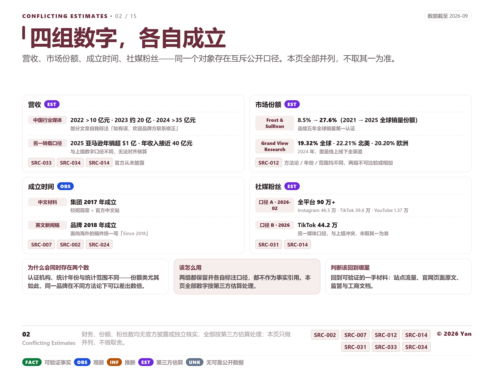
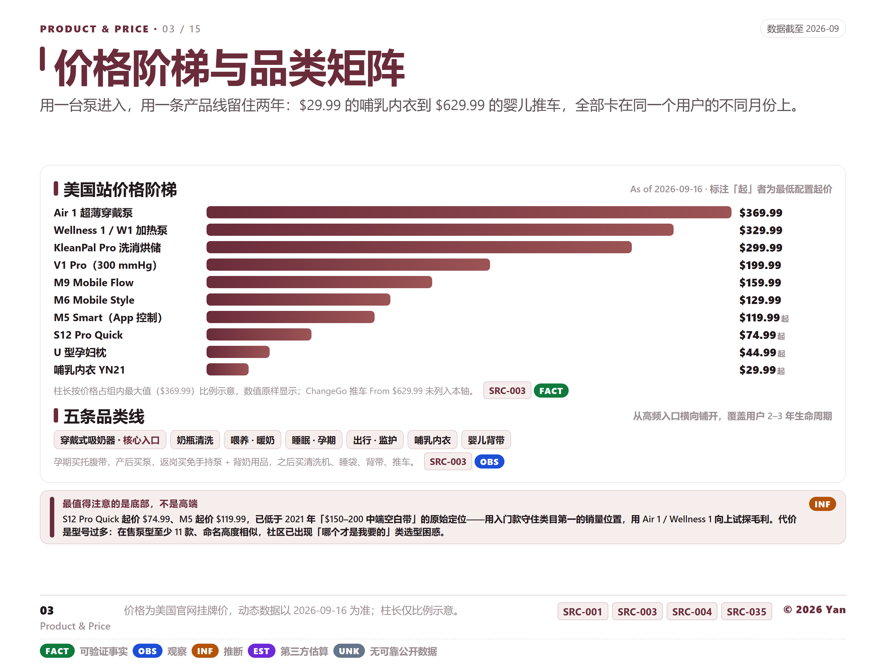
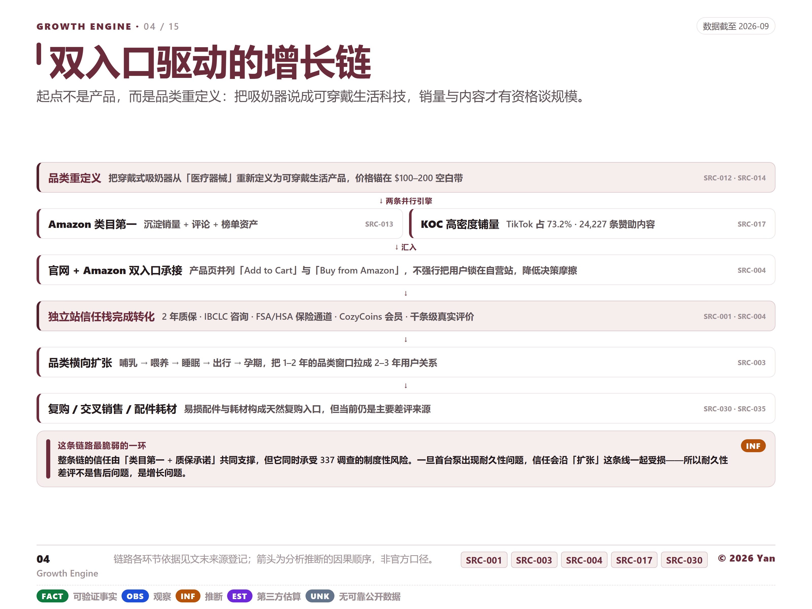
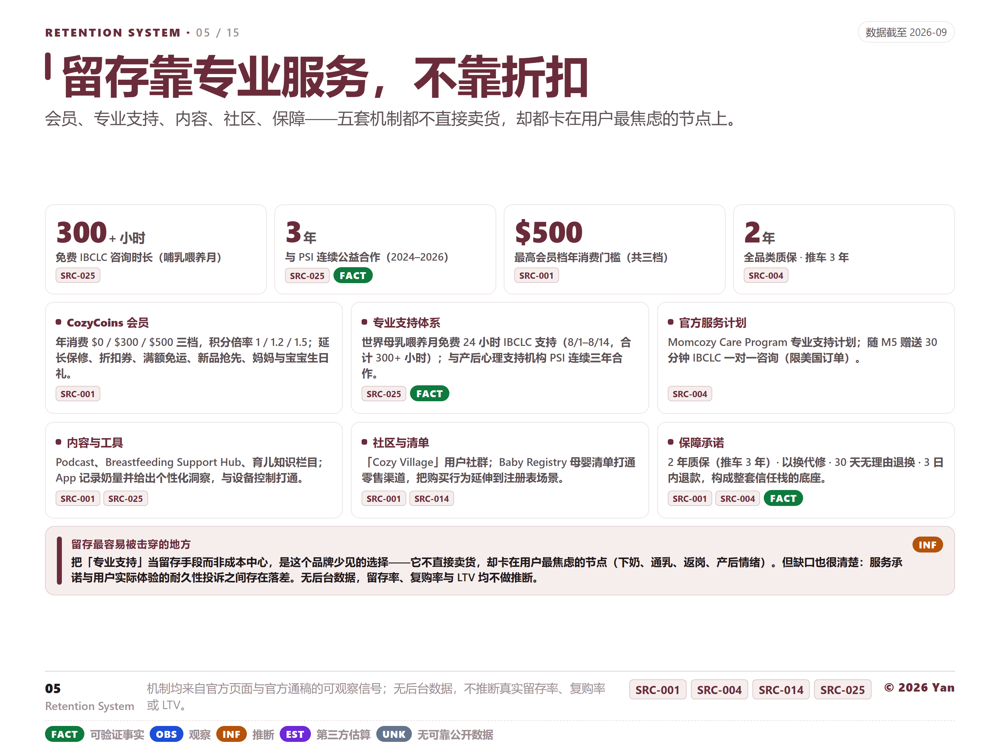
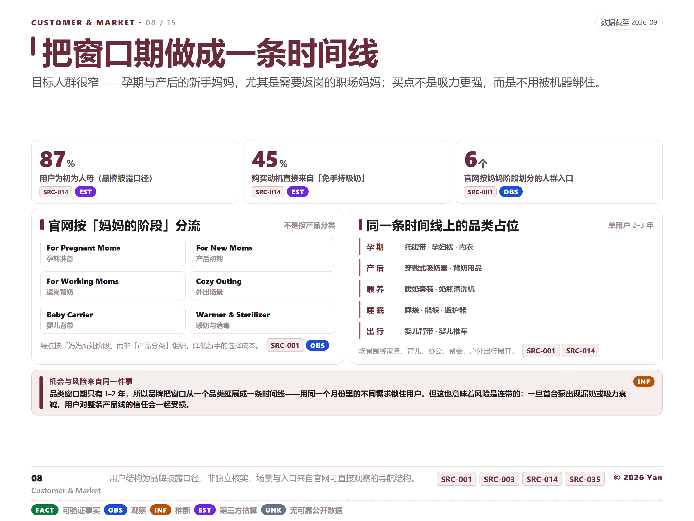
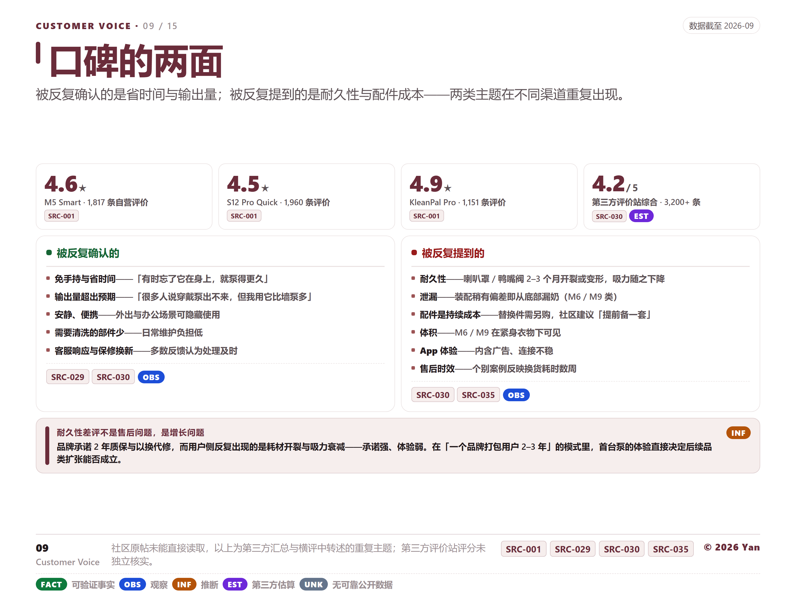
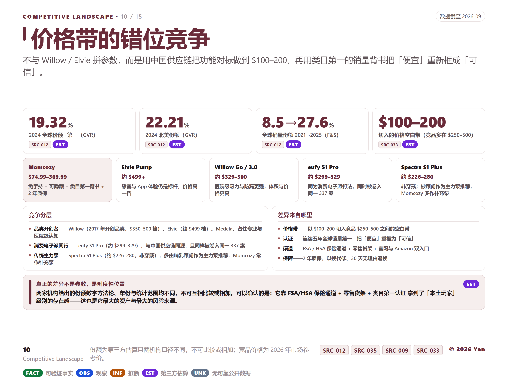
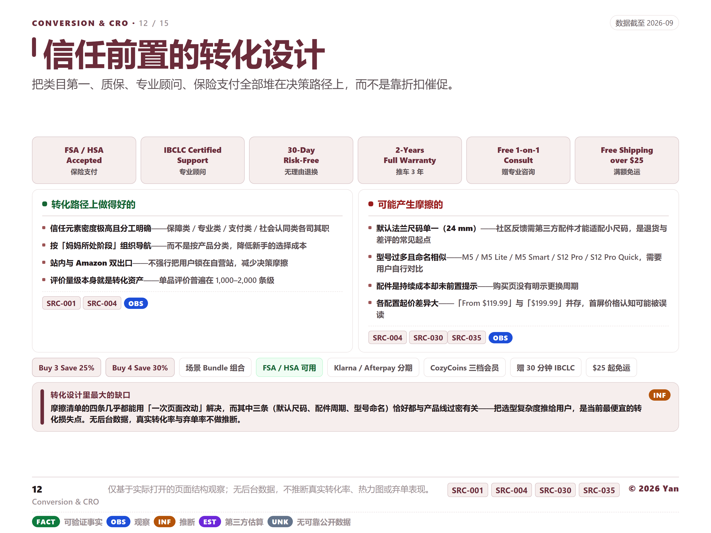
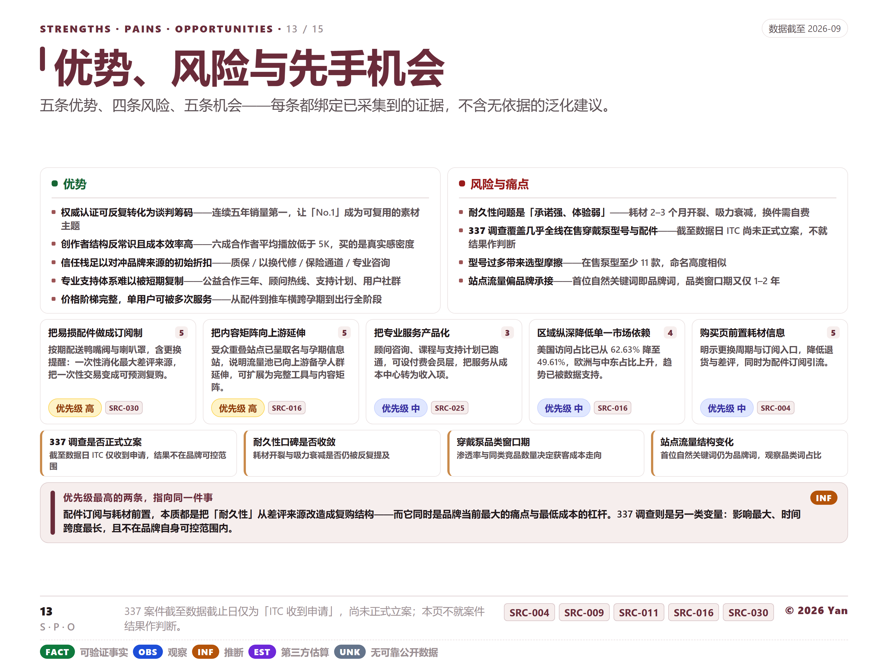
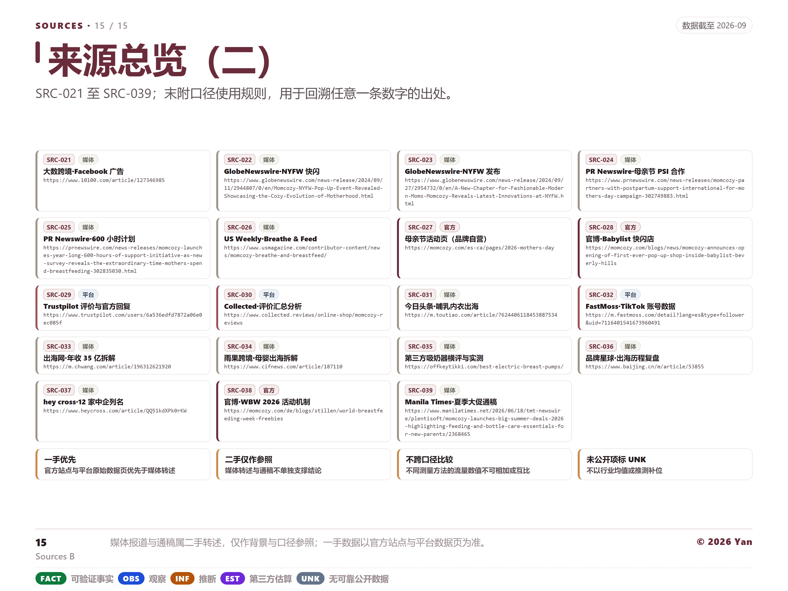

Momcozy · Visual Asset Set · v1
Momcozy 母婴科技：把吸奶器做成入口
DTC 增长研究图片集 · 15 张 4:3 画布视觉资产，同一套设计令牌、证据分级与来源体系，逐张可独立陈列。

01品牌速览
Brand Snapshot
六项规模与认证指标 + 三大市场矩阵：600 万+ 用户、2,200+ 员工、1,000+ 专利、19.32% 份额、连续五年销量第一。
© 2026 Yan · SRC-007 / SRC-012 / SRC-016

02数字的两个版本
Conflicting Estimates
营收、市场份额、创立年份、社媒粉丝四组互斥估算并列呈现，各自标注出处，不取其一。
© 2026 Yan · SRC-013 / SRC-014 / SRC-031 / SRC-033

03低端打底的价格阶梯
Product & Price
$29.99–$369.99 价格阶梯 + 喂养 / 睡眠 / 出行 / 个护 / 清洁五条品类线。
© 2026 Yan · SRC-003 / SRC-004

04一台泵撬动的链条
Growth Engine
品类重定义 → 类目第一 + 铺量 → 双入口承接 → 信任栈转化 → 横向扩张 → 复购的完整增长链。
© 2026 Yan · SRC-004 / SRC-013 / SRC-017

05把用户留在体系里
Retention System
会员、专业支持、官方服务、内容、社区、保障六项机制 + 留存指标。
© 2026 Yan · SRC-001 / SRC-024 / SRC-025

06流量结构的两种量法
Acquisition
主口径取最新一手平台数据（能取到几项列几项），参照口径仅并列作参照；口径差写入方法论注释。
© 2026 Yan · SRC-015 / SRC-016

07买真实感，不买大号
Creators & Social
24,227 条赞助内容、TikTok 占 73.2%、7–15% 佣金区间与达人播放量层级分布。
© 2026 Yan · SRC-005 / SRC-017 / SRC-021

08从孕晚期到出行期
Customer & Market
87% 首次当妈、45% 免手持动机，以及六个生命周期阶段的承接设计。
© 2026 Yan · SRC-012 / SRC-014

09口碑的两面
Customer Voice
自营新品评分普遍 4.2–4.9 星；被反复确认的是省时间与输出量，被反复提到的是耐久性与配件成本。
© 2026 Yan · SRC-001 / SRC-029 / SRC-030

10份额与卡位
Competitive Landscape
份额指标 + 五个竞品卡，标注不可跨赛道比较。
© 2026 Yan · SRC-012 / SRC-014 / SRC-035

11三年不到的营销日历
Campaign Rhythm
2023-11 至今的时间线 + 三场主战役（签名 / 近期 / 最新）与其他节点。
© 2026 Yan · SRC-022 / SRC-024 / SRC-025 / SRC-038

12信任前置的转化设计
Conversion & CRO
六条信任条 + 转化优点与摩擦点两栏对照；无后台数据，不推断真实转化率。
© 2026 Yan · SRC-001 / SRC-004 / SRC-030

13优势、风险与先手机会
Strengths · Pains · Opportunities
五条优势、四条风险、五条机会与优先级，另附需持续跟踪的四项变量。
© 2026 Yan · SRC-009 / SRC-016 / SRC-030

14来源总览（一）
Sources A
SRC-001 至 SRC-020，含来源类型分布；每条附完整 URL，可直接复制访问。
© 2026 Yan · 20 条来源逐条列 URL

15来源总览（二）
Sources B
SRC-021 至 SRC-039，末附口径使用规则；全部 39 条来源逐条可回溯。
© 2026 Yan · 19 条来源逐条列 URL